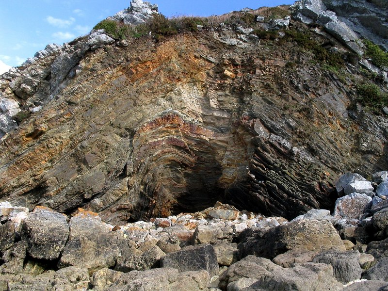
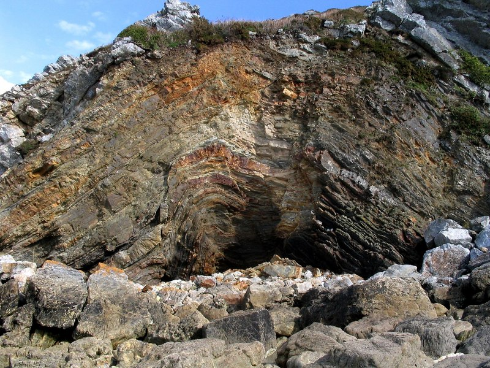
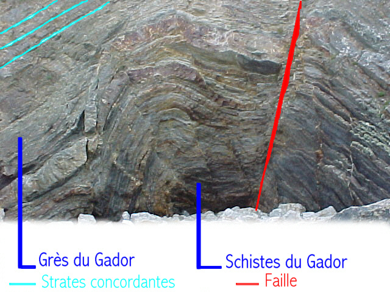
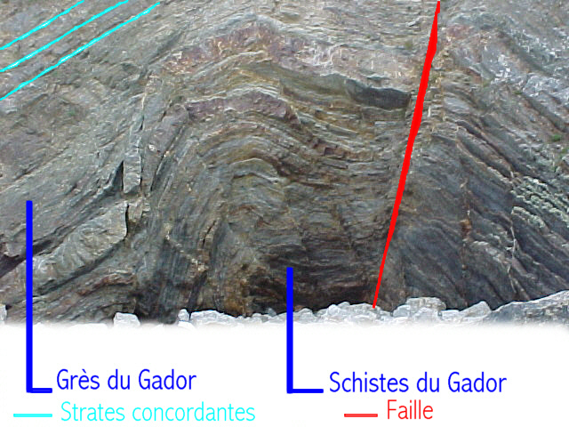

Compte rendu de sortie géologique à Camaret - Crozon

Compte rendu de sortie géologique à Camaret - Crozon

Pli anticlinal de la mort Anglaise
Le pli de la mort anglaise est situé sur les falaises de la mort anglaise. Celles-ci sont situées sur la côte nord de Camaret, à proximité de la plage de Notinau.
Ce pli est constitué de grès (Armoricain). C'est une roche sédimentaire détritique, formée à plus de 85% de grain de quartz. (Le quartz est le composant principal du sable.) Dans ce grès, les grains de quartz sont assemblés par du calcaire. (Le grès est une des roches sédimentaires les plus communes).
Le pli, avec analyse des structures et de la matière

Le pli de la Mort Anglaise s'est forme suite à des contraintes compressives (régime de convergence) il y a environ 450 Ma. C'est parce que les roches les plus anciennes sont du coté intérieur du pli, soit ici, en bas du pli, que ce pli est dit "anticlinal". Ce pli est défini par de nombreuses strates qui témoignent d'un changement de composition de la roche au cours du temps.
Le pli, pour donner l'échelle

Par Mathieu CAROFF, Maxime LUCAS et Alexandre RIOU
Pli anticlinal de la mort Anglaise
Le pli de la mort anglaise est situé sur les falaises de la mort anglaise. Celles-ci sont situées sur la côte nord de Camaret, à proximité de la plage de Notinau. Ce pli est constitué de grès (Armoricain). C'est une roche sédimentaire détritique, formée à plus de 85% de grain de quartz. (Le quartz est le composant principal du sable.) Dans ce grès, les grains de quartz sont assemblés par du calcaire. (Le grès est une des roches sédimentaires les plus communes).
Le pli, avec analyse des structures et de la matière
Le pli de la Mort Anglaise s'est forme suite à des contraintes compressives (régime de convergence) il y a environ 450 Ma. C'est parce que les roches les plus anciennes sont du coté intérieur du pli, soit ici, en bas du pli, que ce pli est dit "anticlinal". Ce pli est défini par de nombreuses strates qui témoignent d'un changement de composition de la roche au cours du temps.
Le pli, pour donner l'échelle
Par Mathieu CAROFF, Maxime LUCAS et Alexandre RIOU